{kind=link}
{kind=link}
Argos
Campo registrado
Um campo curvo se registra contra uma aresta fixa. A observação nasce da relação com a referência.
G2.3.1 · correção dirigida · revisão do owner
A realidade brasileira abre o campo. Uma medição ganha estrutura, torna-se observação e chega ao instrumento. As famílias recuperam identificadores compactos próprios.
wave/nivar-g2-dream-buildINÍCIO aa54f8f32f11e1742cfd1cbe80c7219a217c2de7A troca de campo acontece no tempo: território, matéria, registro e gráfico recebem enquadramentos próprios. A sequência final tem 32 segundos e termina numa investigação aberta.
O que procurarO take de cobre recebe uma folha lateral. O registro vira tabela e depois instrumento. A pergunta mantém sua própria margem. A transmissão óptica recebe outro plano. O convite ao Terminal aparece depois da evidência.
O que a gravação pode demonstrarOrdem, composição, legibilidade e continuidade da execução real. As amostras não comprovam fluidez a 30/60 fps. Os viewports de antes/depois são distintos. Método e validação · falhas encontradas e correções.
A mesma observação
SE/CO · 24 h · carga
18 h · 68,1 GW
O registro e o gráfico usam componentes reais do Terminal, com a mesma seleção no destino. A série é sintética e explicitamente identificada. As fotos mostram infraestrutura real; os takes gerados dão forma a gestos editoriais. Nenhuma dessas imagens é apresentada como origem dos valores.

Brasil real · 2 fotografias de 7
Tucuruí, Bruno Huberman / Repórter do Futuro, 2008. O segundo plano usa transmissão MCA7678, Marcello Casal Jr / Agência Brasil, galeria de 2012. Fotografias históricas licenciadas; sem infraestrutura gerada.
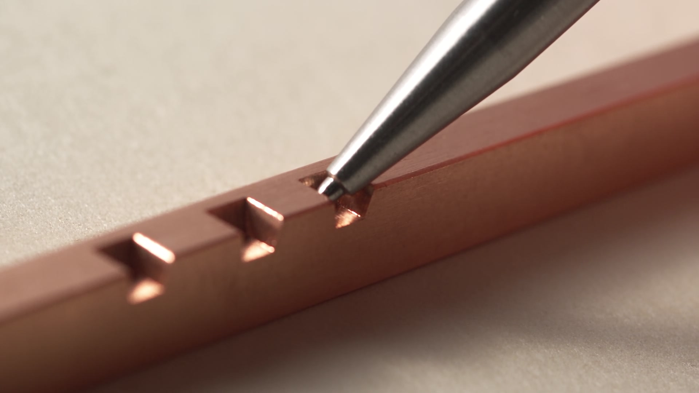
Gerado · C selecionado
Um filme novo de 6,042 s. Aproximação, contato e repouso do probe, com parallax e reflexão. O primeiro candidato foi rejeitado porque inventou numerais de régua; o refinamento remove a escala inscrita.
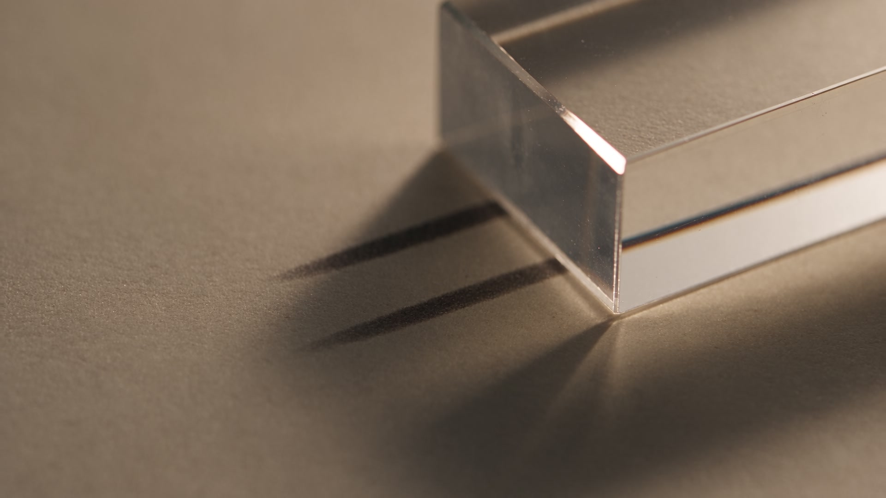
Gerado · B selecionado
Outro filme novo de 6,042 s. Câmera e foco revelam vidro, papel, traços e sombra. Ficção editorial sem lugar nomeado, texto gerado ou correspondência factual com a série analítica.
O patrono permanece como presença narrativa. A insígnia assume a identificação compacta. Cinco comportamentos, cinco silhuetas e uma gramática de massa, corte e intervalo.
Um campo curvo se registra contra uma aresta fixa. A observação nasce da relação com a referência.
Massas desiguais disputam um intervalo. Uma continuidade plausível encontra uma objeção.
O fragmento que falta na matriz aparece adiante. A transmissão conserva sua origem.
Entradas desiguais se unem numa espinha comum, mantendo a diferença entre seus ritmos.
Um padrão destacado encontra esquadro e batente. A referência precede a construção.
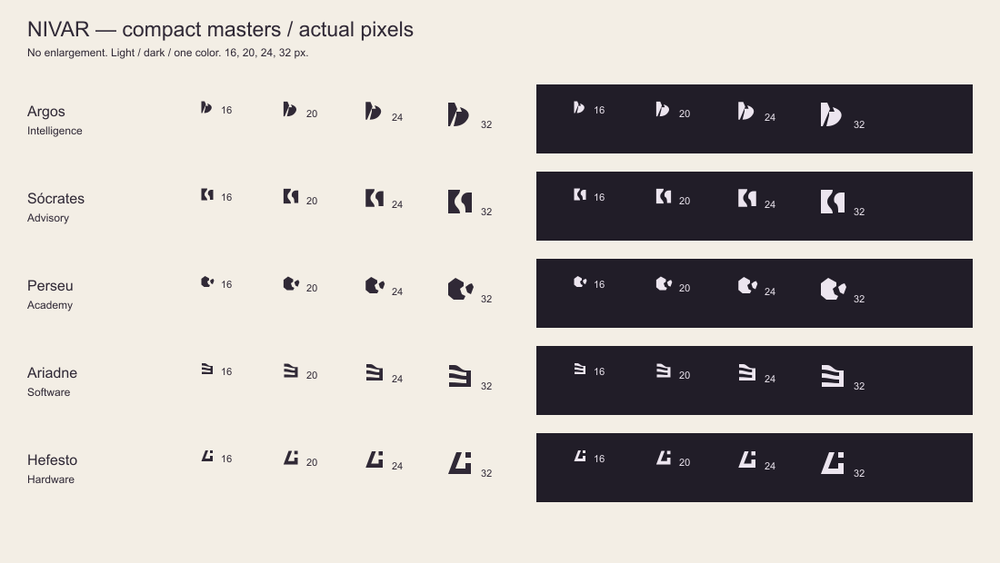
Esta imagem conserva seus pixels nativos. A prova HTML permite conferir os mesmos masters com dimensões CSS explícitas. Abrir prova · paridade com runtime e SVG.
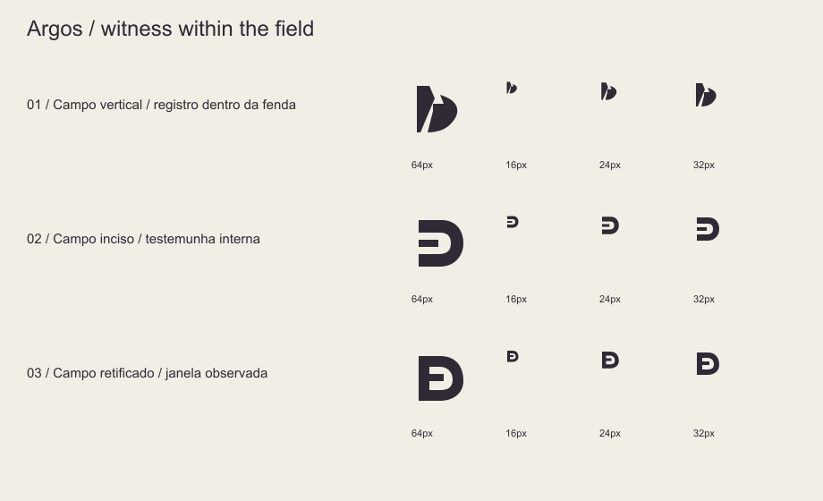
O conjunto alfabético G/S/rr/E/L não foi aceito. Vieram novas topologias, geração de alternativas e outra crítica. Argos ainda passou por uma quarta prova para abandonar a associação de sol e paisagem.
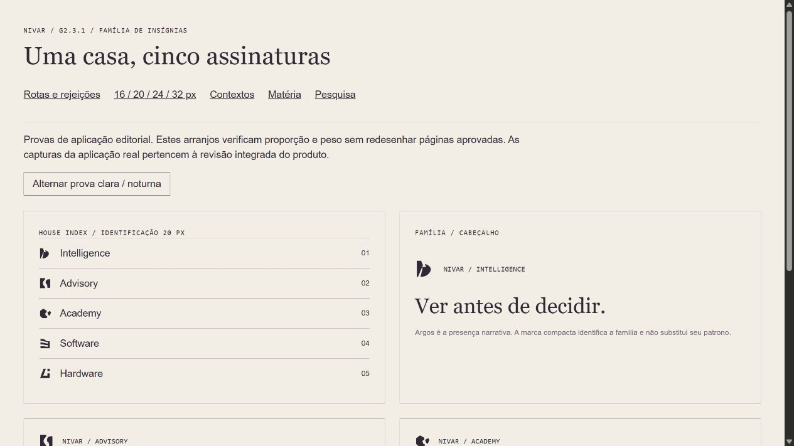
Header, navegação, índice e cartão. Esta é uma prancha editorial de identidade, não uma captura da aplicação. Abrir e alternar tema.
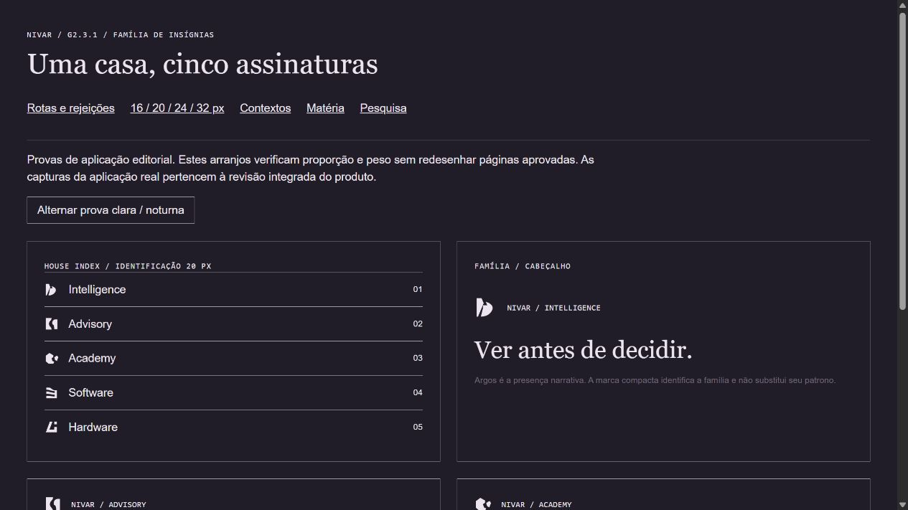
A marca herda a cor do contexto. Sem bitmap, textura ou movimento para tornar a forma reconhecível. Os patronos grandes e o wordmark conservam a hierarquia.
Derivado material · fora do runtime
Os contornos compactos viram incisão em uma cena Blender nova. A matéria é uma extensão da identidade, sem substituir a prova de 16 px.

As decisões desta correção, com a versão completa em texto e seus caminhos de evidência.
Três takes novos, dos quais contato de calibração e transmissão óptica foram selecionados. Sete fotografias novas pesquisadas e inspecionadas, com Tucuruí e transmissão MCA7678 escolhidas. Geração editorial e documentação real têm proveniências separadas.
A matéria e a evidência alternam campos próprios. A folha entra, cresce, recua e ocupa o plano. Registro, tabela, pergunta e gráfico têm território e tempo de leitura. O mesmo registro chega ao componente real do Terminal.
A sequência é dirigida. Ordem e duração constroem a descoberta; uma barra de navegação competia com ela. O produto mantém pausa, replay e leitura sem movimento em controles discretos.
Argos: Campo registrado. Sócrates: Contraprova. Perseu: Matriz e passagem. Ariadne: Registro convergente. Hefesto: Esquadro e padrão. Patronos e ordinais continuam como camadas complementares.
Argos relaciona campo e referência; Sócrates opõe premissas; Perseu desloca um fragmento correspondente; Ariadne reúne entradas; Hefesto compara material e padrão. A ação orientou cada geometria e suas rejeições.
Caixa 32 × 32, massas preenchidas, cortes claros e intervalos amplos. Uma cor e cinco silhuetas. A gramática comum sustenta variação sem virar cinco versões do mesmo contêiner. NIVAR continua acima das famílias.
Wordmark, patronos, funções do Terminal, Advisory e produtos, Academy/Alexandria, método EV-001, finale de Diógenes, footer, operator, rotas e arquitetura geral. As poucas inserções compartilhadas são dependências diretas da identidade compacta.
Registros técnicos e limites explícitos. Abrir relatório final. A aprovação visual final continua com o owner; a entrega permanece na branch de trabalho.
Os artefatos de auditoria têm proveniência própria. Igualdade de bytes não substitui teste funcional. O lint completo registra 300 erros e 11 avisos em 74 arquivos fora do escopo; todos preservados em relação ao baseline. Análise exata.
Peso novo de mídia: vídeos e posters editoriais, 636.462 B; fotografias, 328.302 B desktop ou 75.186 B mobile. Isso soma 964.764 B desktop ou 711.648 B mobile antes de transporte HTTP, sem equivaler a medição de rede ou LCP. As insígnias compactas não acrescentam requests de mídia. Bundle e carregamento.
A lista final acompanha o registro pós-commit.
Se aberto diretamente pelo sistema de arquivos, o navegador pode bloquear a leitura automática do JSON. O link permanece disponível.
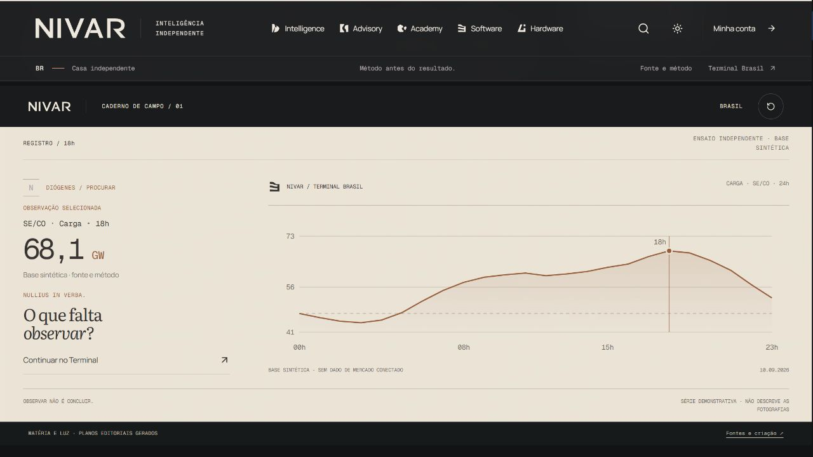
Ativada pelo controle real do produto, no mesmo ramo de apresentação usado por prefers-reduced-motion. A preferência do sistema operacional não foi emulada pela ferramenta. Desktop claro · registro de navegador.
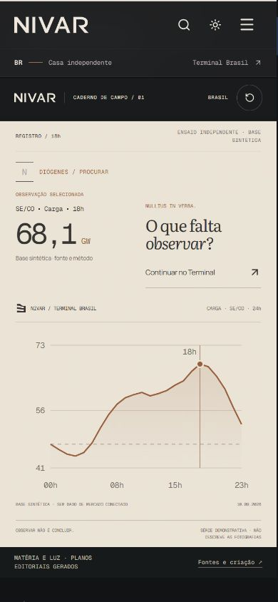
Móvel, 390 × 844 pixels nativos. Mesma leitura no tema claro.
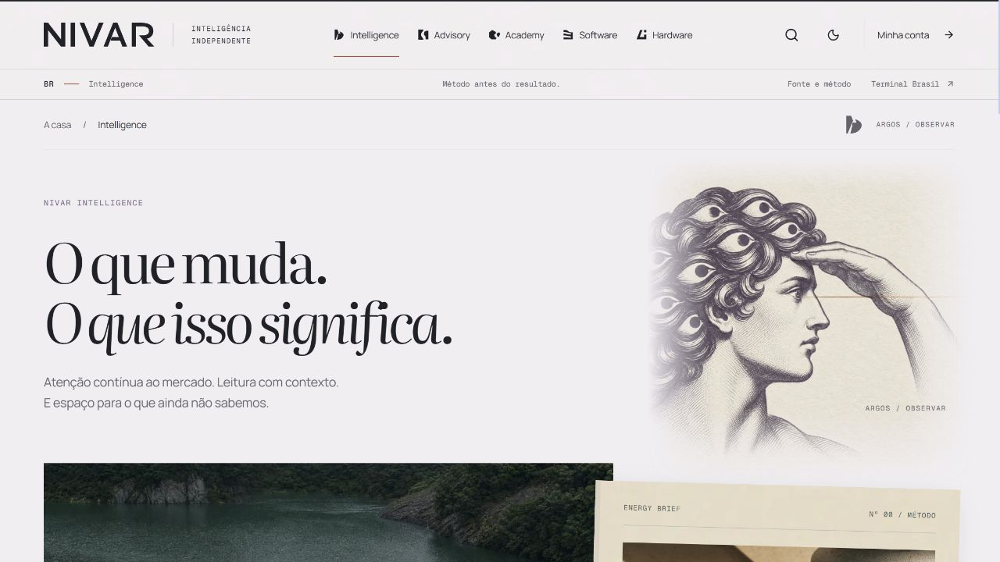
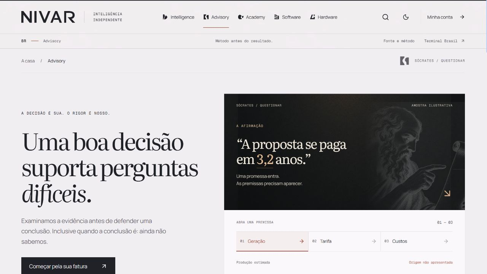
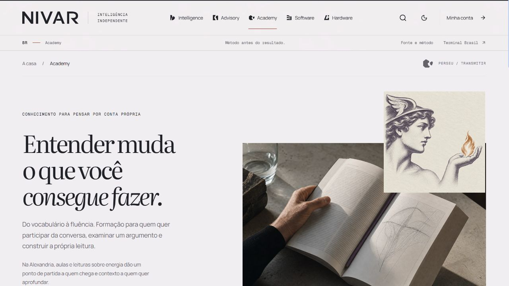
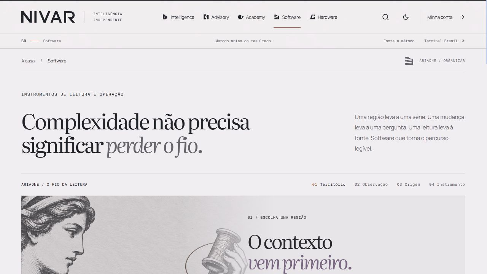
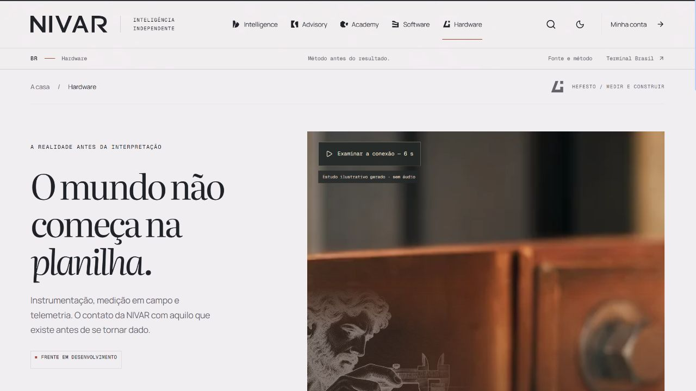
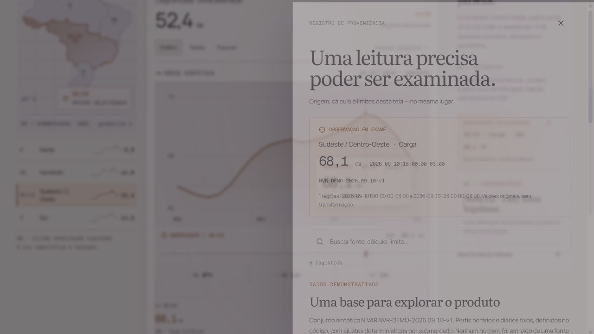
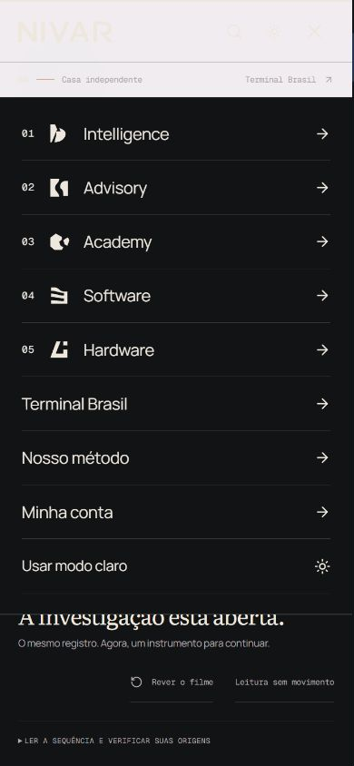
{kind=link}
{kind=link}
{kind=link}
{kind=link}
{kind=link}
{kind=link}
{kind=link}
{kind=link}
{kind=link}
{kind=link}
{kind=link}
{kind=link}
{kind=link}
{kind=link}
{kind=link}
{kind=link}
{kind=link}
{kind=link}
{kind=link}
{kind=link}
{kind=link}
{kind=link}
{kind=link}